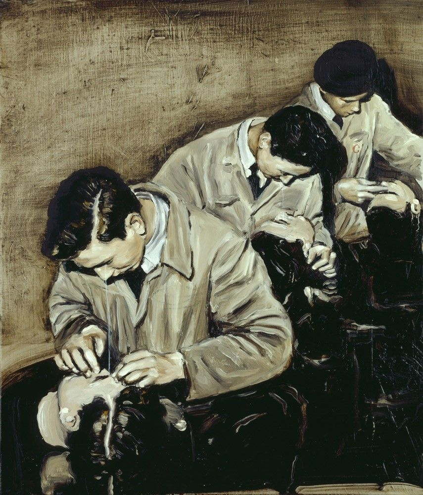
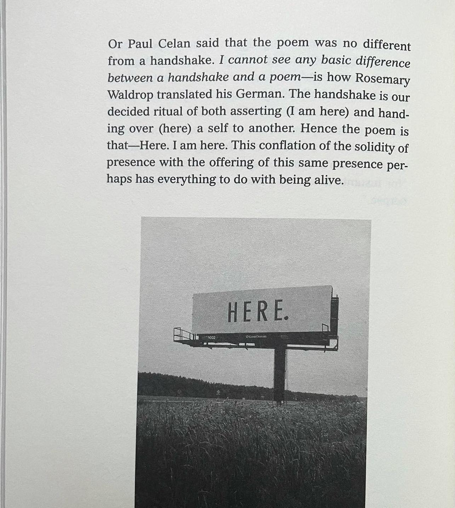

Abstract
I use diving as a metaphor to talk about discourses surrounding the subject of water(y bodies) in order to contextualize knowledge produced when thinking with and through it (water). I’m looking closely and take apart many stages that diving is constituted of and what is probably the most important the many forms of states of submersion and dissolving of boundaries . Further I attend other activities like the process of writing, reading, translating, that allow for entering states alike. Water and ocean, before the emergence of technology had remained undiscovered at large. Remaining a dead oceanic body, monstrous in the imagination of people surrounded by tales of water monsters and future colonial sea farers possibilities. Once the technology of the future cyborgs progressed, the Silent world Cousteau would write about was no longer that: silent. It was a space for monstrous transformations, more closely to the world created by Octavia Butler in her sci-fi story Speech Sounds. I’m thinking of a local quarry in Poland that is now a site for divers as a space for meeting, collective writing and reading.
Equipping
The divers arrive at the location at the quarry. The two divers meet. They start unpacking hard-shell bags for storing their diving equipment. Inside are diving masks, snorkels, wet or dry suits (body armors of black rubber), gloves, scuba tank, regulator, dive computer, pocketknife, flippers, weight.
They gear up first themselves later double-check on their partner whether they haven’t missed anything or if something isn’t hanging loose from the back (as that’s beyond the diver’s reach, vision). In the end it’s a lot of gear to put on your body so getting ready carefully and methodically and at the same time as your buddy are the key to feel safe and reduce any pre-dive stress.
Event Landscapes
There is a quarry in Jaworzno, a city in the south of Poland, once a site to excavations of cement and dolomite plant. The quarry and its walls are made from stones, metals, clay. Due to the lack of payment for the electricity bills, in 1997 it was filled with water in an overnight action. While the power supply was cut off the water pump stopped working and all the equipment sunk. The water pump would suck the water from the ground and relocate it kilometres away from the excavation territory. Now, it is a site for divers, a container for water and a dumpster for the equipment that previously had shaped it.
Carrying
Geared-up divers must drug themselves, now weighting additional dozens of kilograms, to the water. The moment you reach the level of water deep enough to hold you the water will take the weight off the legs and the back keeping the diver’s body on the surface. As long as a jacket (buoyancy compensator) is inflated the air will balance the weight of the body, the equipment and extra weight put on a belt tied around a body preventing the diver from drowning.
In the context of sports, we can learn about two modes of bodily being that can occur simultaneously and fluctuatingly in different parts of the body at any one time. The modes in question are dis- and dys-appearance, both relate to how much aware and considerate we are of bodily functions and perceptions. While the first one–dis-appearance–"is akin to (parts or all of) the body vanishing, or a forgetting of the body as it operates seamlessly – functioning appropriately for the surroundings and the task at hand” (Merchant 218), the dys-appearance, by contrast then, “is associated with awareness, an attention to movement, visceral functions and bodily co-ordination. It is the mode of being which is apparent when we are away from our usual surroundings and/or we are required to act and negotiate our way around space in novel or previously unrefined manners” (Merchant 218). For example, for divers, while submerging, the re-arrangement of the sensorium follows and that in itself, creates a space to reflect on “unrepresentable” senses that can be associated with the dys-appearance.
#Signalling
Submerging
Sensation is immediate, brutal, and takes us by surprise. Would the body seamlessly perform, silently beyond our notice, when encountering a new sensation, this state gets disrupted. We can think of how pupils react to a sudden change of light. The space becomes confusing for the eyes, vision gets blurry, vagueness enters the body, it’s now out of control and will highlight only the very necessary senses to bring it back. In this case, until the body can make sense of the surrounding again, we can think of this suspense as a state of immersion. On this example we can simply imagine what it means for the body to resist all the unnecessary stimuli and put all its focus into balancing in this state of high attention.
After putting on the mask that blocks the nose with the plastic seal, wrapping lips around and biting down on the rubber mouthpiece of the regulator divers are ready. From this moment on nonverbal communication takes place of the verbal communication. They signal they are ready to descend by making a thumbs down sign.
The diver’s bottom time (the time used for calculating his maximum dive time) begins the moment they deflate their jacket and let go to sink in the water. The diver immediately becomes affected by the water environment and its unknowability on a deep sensory level of the body. At first, for the body, submerging can mean something different than regular diving. Diving, as the body might remember, is taking a breath in and descending steeply until you can’t hold the breath any longer and ascending to the surface. This memory often manifests itself in a body of a diver holding their breath as if they were to re-surface right after they went underwater. This is how body at first resists letting go of traditional holding patterns. It relies on to the resources belonging to the above-water space. But the more the diver descends the rising pressure works on that foreign body–the breath the diver is still bringing from above–by compressing it, until the diver is ready to comply and deliberately be held by water, letting go of traditional holding patterns by taking the first breath of a tasteless air from the tank.
Communicating vessels
“For in this matter undoubtedly we face something more twisted than sheer unbroken descent. As the spiral descends a current also rises. […] Lemuria does not pass as time passes” (“For K-Punk // By the North Sea” 01:21–01:51)
A body of water is in a constant flux, its body is affected by many forces that themselves are a subject to constant change. That suggests, along with Kamau Brathwaite, that linear or progressive thinking, Western-dominated logic of development I wrote about before doesn’t apply here– understanding of the underwater space requires being in constant negotiation with its body. It is a reactionary approach, one that Kamau Brathwaite calls for in his tidalectics. If dialectics describes how “Western philosophy has assumed people’s lives should be” (Hessler 33), tidalectics recognizes what is missing, which is the fluid dynamism and transformative aspect of water. The cyclical movement of the sea makes us think beyond binary conditions like regress or progress. Brathwaite’s tidalectics “[dissolves] purportedly terrestrial modes of thinking and living, it attempts to coalesce steady land with the rhythmic fluidity of water and incessant swelling and receding of the tides” (Hessler 31). The tides metaphor has been extensively used by Kamau Brathwaite to incorporate rhythmical structures into his writing to embrace the idea of shifting order and belonging of human and non-human agents, re-arrangement of roles between the bodies and its temporalities the disruption might bring. While submerging the tides might just as much allow us or even help moving in a space but might also push us back—and that’s where the negotiation takes place, it’s where we attune to a different kind of vocabulary.
Our land-based embeddedness and terrestrial “obsession for fixity, assuredness, and appropriation” (Hessler 32) has grounded us in position that is in an imbalance with water. Accustomed to the habitual security the land offers us we fail to imagine terms on which we could co-exist with such vast body that is an ocean. The act of letting go and submerging have been talked thoroughly by Astrida Neimanis’ in the context of her “hydrofeminist” perspective. This perspective considers states in which there is nothing to hold us, where becoming “tetherless” disturbs the traditional understanding of some of our holding patterns. As we start experiencing weightlessness, “we find ourselves tangled in intricate choreographies of bodies and flows of all kinds—not only human bodies, but also other animal, vegetable, geophysical, meteorological, and technological ones; not only watery flows, but also flows of power, culture, politics, and economics” (Neimanis 111-112).
The idea of detaching from some of our comforts means operating from a vulnerable position. “Submerged in the water, we can explore (or rediscover) a new sensorium”, writes Hessler, to attune us to the re-arrangement of thinking and knowledge of bodily capabilities and function water can teach us.
Equalizing
Already descending into the depths, the divers will experience pain due to the sudden change of pressure. “The deeper the diver goes the more pressure is put upon the body, an environmental stimulus which tends to manifest itself in the ears, the mask and the sinuses.” (Merchant 13)
To easily illustrate this reaction its simple enough to think of a plastic empty bottle with a spout. When you descend with it the air will compress and the bottle with start shrinking. If that pressure won’t find any outlet it will puncture one of the walls filling the vessel with water. The same happens to your ear drum when the pressure is working on it. To equalize you would blow your nose to let more air in, just as you would blow some air into spout of the shrunk bottle.
Altering
Both Brathwaite and Neimanis have paid a lot of attention to interruptions and breaks in and of watery bodies. Brathwaite, in his writing brings forth the new syntax that disrupts the linear cause-and-effect narrative. Explain. Similar to it measure, in poetry is often referred to as caesura–a rhythmical pause in the middle of a sentence or poetic line; a breathing interruption that occurs in the natural rhythm of the speech; a fracture in the language that breaks the sentence in two distinguishable separate parts that are yet intrinsically connected. The linguistic approach of Brathwaite, next to the more bodily embedded one of Neimanis play with these interruptions searching for the spark of newness, that when attended to, the body re-shuffles sensual perception, alters the sense of embodiment and landscape.
Breathing
(monstrous, transduction, cyborg, immersion)
The immersion in water, because of its density and high pressure, gives a sensation that can be compared to hovering, or flying. Hence, travelling through and inhabiting space underwater, requires from the diver new ways of navigating with the use of their own body, and that in case of the scuba diving is always supported and in relation to the technology carried with, the body of your diving partner as well as the environment and conditions of the body of water.
Already during the first dive, the new knowledge is produced, when the diver realizes that with breathing, they can adjust their position. “Controlling body positioning underwater is related to the change in volume/density of the body over the course of a dive, which can be controlled on a small scale by the lungs.” (Merchant 228) Intaking air leads to the body ascending, exhaling brings it down—the working together of the two gives the divers the ability to stay level in water. For the novice diver, as long as they are to concentrate on the slow, deep and regular breathing they are able to maintain that state of balance. However, encountering an obstacle, i.e. a fellow diver who you might need to maneuver around to avoid crashing into, an animal or plants/coral reef that often leads to a panic, spontaneous reaction that would be in this case repositioning with the use of BCD, then immediately an over/under-inflated BCD hinders kinesthesia and that disruption into integration of the body and the equipment becomes a source of dys-appearance. With the time, however, the constant interpretation of new causes and effects leads to the embeddedness of these tidal movement as a memory of the body, one that is similar to that of navigating the body on land. The evidence of that can be found in the diver finding their own new way to integrate their lungs and technology. The dis-appearance manifest itself in freeing the diver from making the inefficient adjustments to the equipment, reacting in a more immediate way on a smaller scale with the breath only.
In Cyborg Manifesto, Donna Haraway writes about cyborg bodies, cyborg politics, dominant language of Western patriarchy. The cyborg–“a hybrid of machine and organism, a creature of social reality as well as a creature of fiction–” (Haraway 5) is for Haraway a tool for thought, an intervention that shifts existing relations among society, science and technology. A tool that opposes dichotomy and addresses dualism. That perspective is rooted in the expansion of new networks of communication of and development in cybernetics and digitation of the 20th and 21st century. The divides like culture nature, mind body, nature technology are being examined by Haraway to reflect on the value perceived in the confusion of the borders of these bounded categories and how they are dissolving into one another. Add here please that precisely for this reason your diver and Haraway’s notion are connected. Here, precisely in this moment of diving, the separation of body, mind, nature are overcome. A diver is half machine half human, without the machine, the diving suit, diving into deeper depths for longer periods of time would be impossible.
The diving suit is mainly a tool that allows for the air to circulate. This happens through the tubes which are wired through or clipped to the material of the jacket. Some are meant to be loose, in case you need to extend it to exchange resources with another person, like the spare regulator or like an inflator hose which is being reached to by divers. As the sound doesn’t travel through water how we are used to it on land (expand here) the visual checks take place of verbal communication. It's done not only with non-verbal communication but also reading of the buddy’s technology–statuses communicated through the computed data values displayed on the gauges or the dive computer (oxygen levels, depth, time, decompression plan).
Monitoring each other’s equilibrium comes out of care for each other but more importantly out of the suspicious over the deprived of typical holding patterns body that now navigates an unfamiliar space leaving a lot of room for mistakes that underwater get much more amplified.
For Haraway, the “[c]yborg imagery” expresses “taking responsibility for the social relations of science and technology means refusing an anti-science metaphysics, a demonology of technology, and so means embracing the skillful task of reconstructing the boundaries of daily life, in partial connection with others, in communication with all of our parts.” (Haraway 67) There is another new relationship of the dive equipment in relation to the rest of the body that can be discovered in this state of weightlessness that the body of water offers. I mean the need to be especially perceptive to what is around you–above as well as bellow, in front and behind of the body. The touch, again, is being recalibrated. On the land the proximity of objects, especially the ones tied to your body reminds you of its position by them putting weight on your body and being in constant friction and in response to your movement, thanks to the gravity. Looking down would seem the most likely place to find bodily appendages, underwater, while the body being flipped, means you might find it floating around, getting hooked under armpits.
Already lacking the grounding nature of a solid underfoot, proprioception needs also to deal with a set of prosthetics, which must be internalized so that the diver can remember their location on the body and in space, in order to put them to use. (Merchant 230)
This work is done for yourself but also you do it for your buddy since none of you grew the respectably flexible neck or arms that can reach the places behind your expanded with an oxygen tank body and the inflated jacket limiting the arms span.
Interestingly enough, Haraway’s cyborg theory is based on writing as “technology of cyborgs, etched surfaces of the late twentieth century.” (Haraway 57) (Coustous’ silent world) Body of a diver, how I see it is not only a fusion of a human and a machine but also as a surface onto which the new memory of the body is carved into. The transformation from dys- to dis-appearance, the new knowledge of a body brought to the surface. I would go further to say that not only the cyborg body of the diver is writing but the act of diving is that too. Writing is a good metaphor of feeling submerged too–as an act of immersion into subject. The writing is gaining other symmetry like a vertical one of free fall. This way of experiencing both diving and process of writing creates a personal connection to that claim of Dona Haraway.
Cyborg politics are the struggle for language and the struggle against perfect communication, against the one code that translates all meaning perfectly, the central dogma of phallogocentrism. That is why cyborg politics insist on noise and advocate pollution [...]. (Haraway 57)
The cyborg body both writes and is written and in the process learns and changes, blends the boundaries. Haraway nominates cyborgs: herself, Sister Others, i.e. women of color, and a crew of women who are science fiction writers. It’s important to acknowledge the context in which Haraway situates this knowledge.
“Cyborg monsters in feminist science fiction define quite different political possibilities and limits from those proposed by the mundane fiction of Man and Woman.” (Haraway 65). The technology and language are tools for connecting and interrupting into dominant discourses of Western patriarchy as well as into fixed taxonomies like active/passive, culture/nature right/wrong. There is another author/theorist dealing with similar subjects, like these of struggle for language and reflecting on how social boundaries are produced and crossed. It’s Octavia Butler, who Haraway often referred to in her writing, calling her a“theorist for cyborgs.” (Haraway Simians, Cyborgs, and Women 173). Butler is also mentioned in Haraway’s Cyborg Manifesto for work that constitutes a feminist science-fiction of cyborg stories. Particularly interesting in this context is Butler’s sci-fi story Speech Sound written in 1984.
Exploring, Levelling
Container Technologies
To discuss the containment aspect of the technology and further that of a quarry, I will introduce Zoë Sofia’s term “container technologies”. In her essay she refers to ideas of the controversial Martin Heidegger who would pay attention to spaces, containers and technologies of holding and supply (Sofia 191-194). One of the examples is a meditation on a jug in his essay “The Thing” where he emphasizes an active nature of things.
For the purposes of this chapter the jug I want the readers to have in mind is a container made of clay, a material deriving earth’s crust and surface. “The empty space, the nothing of the jug, is what the jug is as holding vessel.” (Heidegger 167) For a new reading of Heidegger, I further examined and compared a quarry to a jug. “The emptiness, the void, is what does the vessel’s holding” (Heidegger 167). Following on that note, Zoë Sofia adds: “the maker of the jug,” just as an arm of an excavator, “does not so much shape the material as shape this void”(Sofia 191). It is important to point out here, that holding is considered here as an active process, hence, the thing itself is an active entity, not a passive one. The container is an entity of re-sourcing–once it gets filled from a source it becomes a source of what it has kept and preserved. We can expand our thinking of holding as a process that is in a constant flux between taking, keeping and outpouring.
In a similar way, Jane Bennett in her book “Vibrant Matter” through extended discussions of commonplace things reconsiders material agency or effectivity of nonhuman or not-quite-human things to come into understanding that none of them should be assumed to be passive objects or stable entities. She argues that matter has agency. Beyond any container’s spatial dimensions, the vitality of matter entails temporality: “the container takes in during times of abundance, and it keeps and preserves its contents over time” (Sofia 192).
If we acknowledge the violent processes of extraction, presence of a far more complex system of material flows, labour, politics of sites like quarries, there is an immediate need for conceptualizations of the “part-whole” relation.
At the end of the twentieth century, the arena in which stuff happens— what the military calls the “theater of operations”—seemed to many people to have expanded dramatically. “Globalization” had occurred and the earth itself had become a space of events. The parts of this giant whole were both intimately interconnected and highly conflictual. […] My term of choice to describe this event-space and its style of structuration is, following Deleuze and Guattari, assemblage. (Bennett 23)
Bennett defines assemblages as “ad hoc groupings of diverse elements, of vibrant materials of all sorts” (Bennett 23). Interestingly enough, Heidegger refers to the old-German meaning of the word “thing”, that is "a meeting, an assemblage, a coming together of parts.” (Harper)
They have uneven topographies, because some of the points at which the various affects and bodies cross paths are more heavily trafficked than others, and so power is not distributed equally across its surface. […] Each member and proto-member of the assemblage has a certain vital force, but there is also an effectivity proper to the grouping as such: an agency of the assemblage. And precisely because each member-actant maintains an energetic pulse slightly “off” from that of the assemblage, an assemblage is never a stolid block but an open-ended collective, a “non-totalizable sum.” An assemblage thus not only has a distinctive history of formation but a finite life span. (Bennett 24)
We ought to remember that the jug is a recurring element in communal spaces—home (sharing water, cleaning), church (baptism) etc. This very present communal aspect of containers, once filled with water, become a site for transformative states, like birth?, growth, rusting, are the evidence of “coexistence of mutual dependency with friction and violence between parts.” (Bennett 23)
There is a notable resonance between this idea of a safe preserve for humans or other entities to become themselves, and the intersubjectivist account of the maternal function as one of actively containing an emergent subject and letting it play safely in potential space, so it can become who it is. The emphasis in both instances is not on the singular entity (the subject, the thing, the organism), but on belongingness to and interactions in an actively containing and preserving environment shared with entities, both human and non-human: “dwelling itself is always a staying with things” (Sofia 193).
Here a local and specific object is also a manifestation of its macro-context. The bodies of water attended to by divers are understood as event landscapes, active entities–the moment we acknowledge them as such, we become agents in exchange ourselves—we enter a relationship in which in a reciprocal manner we care for each other, whether we submerge or cohabit in its surroundings. “It is in this context that infrastructure architecture comes into focus, as these are the structures that connect or disconnect, exhaust or invigorate, care for or violate our planet” (Kamari). But beyond apparent human interference into quarry’s landscape, thanks to our understanding of a container, its context can be broadened. “The characterization of infrastructure in this discussion is twofold: it concerns both the colonizing aspects of infrastructure and the decolonizing potential of infrastructure and infrastructural thinking. The former is characterized by the Western-dominated logic of development. […] The latter, on the other hand, tries to connect us to the Earth, not as a resource to be consumed but as a ground to cohabit; to be protected, taken care of and helped to flourish.” (Kamari) It is now a site of damage, desire, fear and fecundity.
In Bipolar Guide to Language Acquisition Orion Facey writes about the process of learning a language in which they remind us that words do things more than they mean—something that children intuitively attempt at from the very young age (Facey 7). “The etymological roots of words can sometimes give us glimpses of the workings of dark grammar , especially when their origins seem to contradict their current usages […]. The slippages between the intentions behind the words our ancestors forged and the real trajectories of them point towards magical demons lurking behind the shadows.” (Facey 10) Later in my text I dive into old, philosophized upon, examined in the context beyond their current meaning words like “thing”, “assemblage” to think of our relationship with objects, bodies of nature rendered as passive, steady, unchanging and immutable. We can imagine these reciprocal processes, interactions, negotiations teach us new vocabulary which we use to operate towards other bodies. We are able to perceive more complex relationships, interrupt blatantly repeated schemes and attune to new voices and perspectives.
The acquisition of a new language can be traumatic because the knowledge gained will illuminate parts of the dark grammar of the mother language.
The native speaker feels betrayed by their mother language, which is not entirely an unfounded suspicion.
The mother language had to lie to the native speaker, in order to hoodwink her into believing that the world of speech is more potent than the world of unspeech.
When she speaks in the new language, she can only speak monstrously, because she speaks from the void of the dark.
She illuminates the darkness that the listener has yet to discover. The listener is either appalled or aroused; in either case, she can only see a monster.
The more time a spellcaster spends in the darkness, the more she becomes attuned to magical energies.
She begins to make sense of monstrous forms, and their monstrosity becomes more and more symbolic in nature.
If she is able to return to the light, what she found within the dark is hers to keep. But what is found within the dark cannot be expressed with words.
THE DARK IS THE REASON WHY WORDS WILL ALWAYS BE INSUFFICIENT. (Facey 11-12)
Re-surfacing / Emerging
“Poetry does not strut logically amongst convictions, it seeps through crevices; a magmic flux resuscitated amongst vermin. If it was not that the Great Ideas had basements, fissures, and vacuoles, poetry would never infest them. Faiths rise and fall, but the rats persist.” (Land)
Re-surfacing takes place at the end of the dive. The moment you signal to your partner that you will be resurfacing you give each other a sign of ‘thumbs up’. Underwater, this signal doesn’t mean “everything’s fine” or “well done”, what we might be used to. It might get misinterpreted by novice divers with gratifying that the dive is accomplished or finished, while that’s probably the most fragile moment of the whole dive. Not only is the diving body is weakened, but it’s also already more relaxed in the watery environment, accustomed to new sensorium (possessed new knowledge) and attuned to the environment, and with that language the body is able to navigate in it beyond its first sensations. “This is how this environment treats me and this is through this treatment that I recognize it.” (Weil 11) It’s probably here where all the former actions are manifested and compressed the most and need to be considered while attempting to leave the body in which you are submerged. The time and depth is crucial to decide how much time you need to attune yourself to the conditions of many levels.
The beginning of resurfacing, after both-side agreement, entails switching back to vertical position and looking up and listening, whether you hear any noise coming from the surface or there is anything that you might have to be careful not to get in contact with. That’s probably the first step to re-approach the environment of the land-based landscape. However, that environment, familiar to the body prior to the dive, isn’t sustainable for the submerged body yet. Being at the water depths involves breathing pressurized air. When ascending, the gases, such as nitrogen, need time to diffuse out slowly. (more specific) Especially at the body’s limits. With a too-sudden, non-suspended ascent the human body gets exposed to a rapid decrease in pressure that surrounds it which might result in decompression sickness.
At that moment, you acknowledge the responsibility of the action like submerging and also reach a state of a deeper understanding of the position you are taking–the position in which your body might easily find itself back in its originally comfortable environment unequipped to survive. The weight of transformation, both of the subject and perception, can be measured in the body’s buoyancy between resistance and receptivity. In this case, reemerging is an exercise that creates a space for negotiation between at least two environments that are mediated by a body in a movement—one being brought to the surface from the depth (resources), the other that sustains human and non-human agents’ life on a certain depths, and the diver’s body, in such case, is a go-between of this exchange.
The body becomes an active space for negotiation between two other subjects. The newly unfolded terrain of bodily capabilities and function might bring a new meaning to what has been dimmed forgotten (amniotic fluid), neglected in our bodies (disappearance), limited, or restrained by certain conditions of the environment.
A similar negotiation we can attribute to a role of a translator who exercises ways of naming and seeing the world along thinking between two languages. In the Levelling section, I wrote about working of a dark grammar, which can be discernible for example in the slippages between the original meaning and current usage of the words.
In the essay “I’m Going to Describe a Ritual” Beatriz Santiago Muñoz unpacks possibilities and positions for meeting in a time and space of exception in which attention and perception are transformed. A common threat of practices described by Muñoz is that they seem to be degraded as minor and superficial, without depth. One story we can read is an interview with a writer and translator from Haiti Guy Regis Junior who’s undertaken a process of translating Proust’s In Search of Lost Time from French to Kreyol. How the activity of translating is a state of immersion manifests itself in Regis’ words about his process of translation.
I kept reading [Proust], as everyone does, both frantically, and driven by need for deep meditation. This great torrent in such deeply personal language – I wanted to express it, to interpret it myself. In other terms, translating is reproducing, interpreting. That desire was enough, and I got to work – like a child, mimicking, interpreting this music in my own way, with my own instrument, my own language. Translating is entirely egotistical and at the same time sacrificial. We translate out of the desire to deeply read a text. Everything starts there; language comes after.
Maybe the most striking part of this project is who makes, submits (becomes tetherless) and observes in depth is able to open other positions and relations between subjects. Guy Regis Junior’s project becomes even more relevant when we read that “Kreyol is an oral language; French is the language of literary instruction in Haiti. The translation of Proust to French is not a necessity, there are not thousands, not even hundreds of readers waiting to read Proust in Kreyol.” (Santiago Muñoz)
We can remember how the diver’s body becomes a site of very sensitive yet deeply transformative states that involve mediation of subjects/bodies belonging to different depths to bring a newly discovered meanings back to the surface.
One other thing the diver needs to be very cautious of is to never hold the breath. Continous breathing is of essence. It is especially important when the divers ascend. If, for whatever reason, you cannot breathe (out of air, frozen regulator, whatever) you need to exhale anyway. Otherwise, if you hold that one last breath the air in your lungs would expand due to the decreasing water pressure as you climb the water column, potentially causing lung pressure injuries. But not only the diver gets disoriented when ascending in blue water without any reference to what we know as above or belo us, meaning any reference point of orientation, but also because of the expanding air that escapes the diver’s sinus and ears. The disoriented diver to combat it they need a reference. That can be your buddy’s bubbles but also their body whom diver can hug onto to bring some relief. Before you get to the surface of water you divers protects their heads by stretching one arm out. “The outside will shift again, in a way that once more alters the human relation to it. Our mystery has become infinitely more complex, and curiously in this, more tractable, but it is not yet twisted enough.” (Ireland)